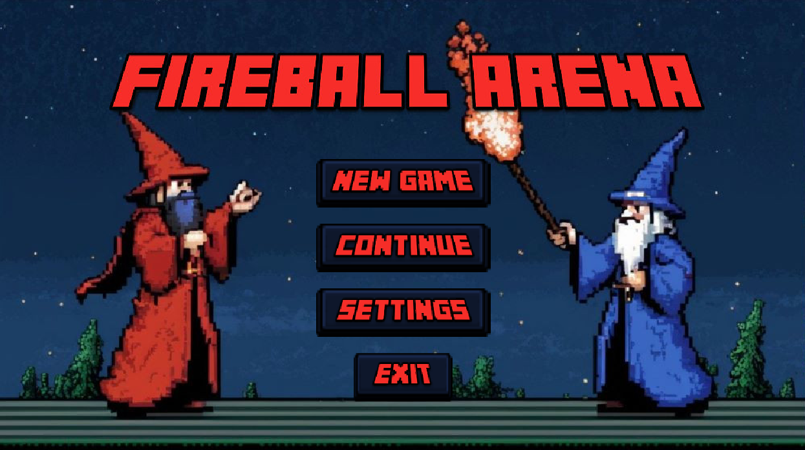
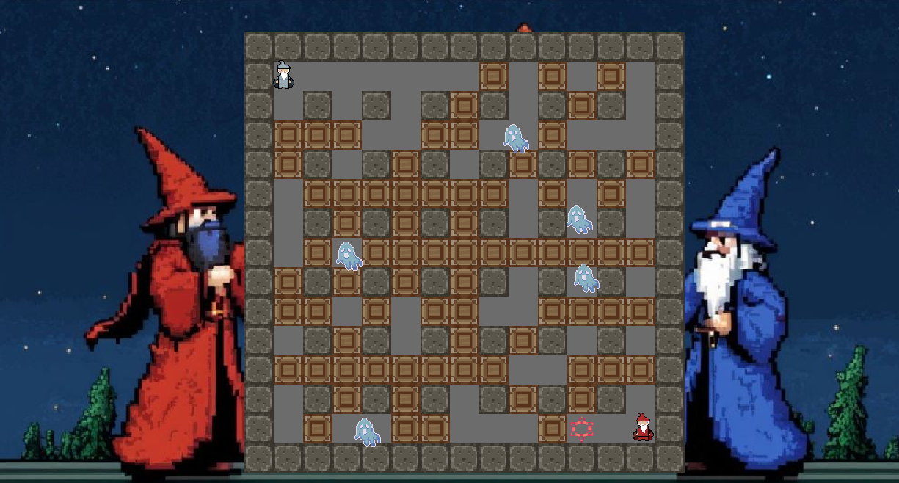

Bogdándy Béla Honlapja
Bemutatkozom:
Szia! Üdvözöllek a személyes honlapomon. A nevem Bogdándy Béla, jelenleg harmadéves hallgató vagyok az Eötvös Lóránd Tudományegyetem Informatikai Kar Programtervező Informatikus szakán.
In EnglishProjektjeim:
Webfejlesztés Projekt: Rajongói Weboldal
Egy egyszerű HTML/CSS projekt amely során egy weblapot kellett elkészítenem az egyik egyetemi órámra HTML/CSS segítségével.

Ez a weboldal a Mastodon amerikai heavy metal zenekar történetét, diszkográfiáját és tagjait mutatja be. Az érdeklődők hírlevelet is kérhetnek a bandáról, koncertinformációkról és a weboldal frissítéseiről. A felhasználók visszajelzést is küldhetnek a weboldal fejlesztésével kapcsolatban. (A visszajelzés, illetve a weblap frissítése nem garantált.)
Javascript Projekt: Egyszemélyes Társasjáték
A császárnő térképésze vagy, és meg lettél bízva hogy térképezd fel a környező területeket, amit azáltal tehetsz meg, hogy a játékban különböző alakzatú és tereptípusú elemeket helyezel el egy 11x11-es rácson, miközben a küldetések alapján pontokat gyűjtesz. A cél, hogy a 28 időegység alatt minél hatékonyabban töltsd ki a térképet és teljesítsd a császárnő kívánságait!

PHP Projekt: ELTE IK témájú Trading Card Game, "IKémon"
Az IKémon projekt egy PHP alapú webalkalmazás, ahol a felhasználók Pokémon kártyákkal kereskedhetnek. A játékban van egy adminisztrátor, aki létrehozhat új kártyákat és felügyelheti a felhasználók tevékenységét. Minden felhasználó vásárolhat és eladhat kártyákat a rendszerben, a kártyák pedig különböző tulajdonságokkal és elemekkel rendelkeznek. A cél, hogy a felhasználók minél több értékes kártyát gyűjtsenek össze.
⚠️Jelenleg nem érhető el kipróbálásra⚠️
Java Csoportos Projekt: Bomberman (Fireball Arena)
A projekt során egy többjátékos "Bomberman" típusú játékot valósítottunk meg Java nyelvben, amelyben két játékos versenyezhet egymás ellen egy 2D-s pályán. A játékosok bombákat helyezhetnek el, melyek robbanással távolítják el az akadályokat és ellenfeleket. A projekt csapatmunkával készült, és sikerült beépítenünk több bónuszt, mint például a bomba hatótávjának növelését, valamint szörnyeket, amelyek akadályozzák a játékosokat. Az elkészült játék lokális multiplayer funkcióval is rendelkezik.
⚠️Jelenleg nem érhető el kipróbálásra⚠️